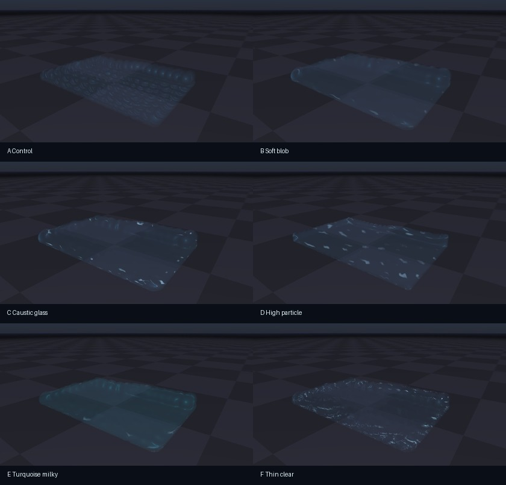

Newton Fluid Support
Prototype implementation of particle-fluid simulation and ViewerGL water rendering for Newton, focused on giving solver developers a reusable fluid visualization path.
Generated 2026-06-06 from branch eric-heiden/fluid-support, based on origin/main a046d613. Media was rendered with ViewerGL.get_frame().
Candidate C: translucent caustic-glass material with wider depth smoothing and stronger refraction/reflection.
viewer.log_fluid() with particle centers and radii, then get screen-space depth smoothing, translucent composition, approximate refraction, and screen-color reflection without reimplementing GL water shaders.
Architecture
newton.solvers.SolverSPHis an experimental weakly-compressible SPH solver using Warp kernels and awp.HashGridneighbor search.ViewerBase.log_fluid()adds a backend-neutral fluid logging API. Backends without fluid support fall back to point rendering.ViewerGL.log_fluid()stores particle centers/radii in a GL buffer and renders them through a screen-space fluid pass.- The ViewerGL pass writes nearest fluid depth and optical thickness, applies separable bilateral depth smoothing, then composites water over the opaque scene using translucent color, refraction offsets, Fresnel-like reflection, procedural caustic strokes, and a specular highlight.
- Additional material controls now include blur radius, refraction/reflection strength, and caustic strength/scale, so fluid solver authors can iterate visually without rewriting shaders.
- Particle billboards are expanded in a geometry shader instead of relying on
gl_PointCoord, which was unreliable in the target headless GL context.
Visual Variants
The gallery below explores six render directions. The labels A-F are intended for feedback; the implementation can keep several presets or converge on one default material.

Contact sheet of the six generated variants. D uses a higher particle count; the others use the same 1,008-particle SPH setup with different ViewerGL material controls.
Closest to the first implementation. Useful baseline, but individual particle silhouettes remain visible.
More continuous surface extraction from the same particles. The blob reads smoother but loses some small-scale detail.
Adds caustic-like procedural strokes, stronger refraction, and a glassier surface. Current best candidate for a nice water default.
Tests the solver/render path with more particles and smaller radii. The surface has fewer visible particle cells before smoothing.
More opaque and volumetric. This may suit viscous fluid presets better than clear water.
Highest caustic/refraction settings. It is visually lively but may be too sparkly for a default water material.
Rendering Prototype
The same SPH state rendered as raw particle spheres and as the new ViewerGL fluid surface. The fluid path is rendering-only; it does not change solver state.
Prototype smoothing comparison. The selected path combines a rendering radius multiplier with bilateral screen-space depth smoothing. Low smoothing preserves every particle; the smoothed path reads more like a continuous liquid surface while remaining cheap.
Solver Prototype
SolverSPH supports active-particle filtering, density/pressure evaluation, pressure forces, viscosity, gravity, external particle forces, axis-aligned world bounds, velocity damping, and velocity clamping. It preallocates density and pressure buffers and reserves the particle hash grid at construction time.
The solver is deliberately not a full production fluid method. It is intended as a first Newton-native fluid solver and as a compact example for solver authors who want to produce particles that can be rendered as liquid through the shared ViewerGL path.
| Component | Current status | Notes |
|---|---|---|
| Neighbor search | Warp HashGrid |
Used for density, pressure, and viscosity loops; CUDA graph capture was verified after warm-up allocation/compilation. |
| Fluid rendering | Screen-space GL pass | Depth, thickness, bilateral smoothing, translucent composition, approximate reflection/refraction, and procedural caustic highlights. |
| Surface smoothing | Explored: inflated billboards, wider bilateral blur, more particles | The best-looking variants combine more overlap, a larger blur radius, and subtle caustics. True meshing remains a possible later backend. |
| Splash/foam | Deferred | Can be added later as a velocity/curvature driven overlay or secondary point set without changing the core fluid API. |
Examples
The branch adds newton/examples/fluid/example_fluid_sph_dam_break.py. It exposes the SPH parameters and ViewerGL fluid controls, including --render-mode, --fluid-radius-scale, --fluid-smoothing-iterations, --fluid-smoothing-radius, --fluid-thickness-scale, --fluid-caustic-strength, --fluid-caustic-scale, and --capture-graph.
Example invocation:
uv run --extra dev -m newton.examples fluid_sph_dam_break --viewer gl --headless --no-show-boundsVerification
uv run --extra dev -m newton.tests -k test_solver_sph: passed on CPU and CUDA, including CUDA graph capture oncuda:0.uv run --extra dev -m newton.tests -k test_viewer_fluid: passed.uv run --extra dev -m newton.examples fluid_sph_dam_break --viewer null --test --num-frames 5: passed.- Headless OpenGL smoke tests generated nonblank frames through
ViewerGL.get_frame()for raw particles and fluid rendering.
Next Work
- Add fluid collision against arbitrary shapes instead of only axis-aligned bounds.
- Add optional foam/splash particles for high-velocity free-surface regions.
- Expose per-fluid material presets for water, viscous liquid, and sand-like particle rendering.
- Consider a mesh or neural/splat surface backend later, while keeping
log_fluid()as the stable frontend API.